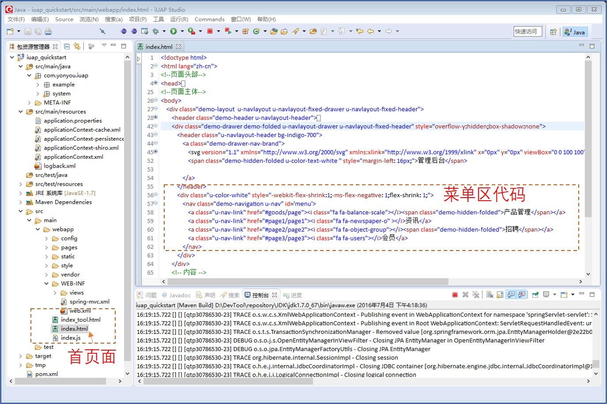

前端配置简介
主界面说明
产品界面如下图，由左侧是菜单区，右侧是功能内容区，最上部是系统功能导航区三部分组成。

主页面在index.html文件中,并且在底部引入了require.js和首页对应的初始化js文件，RequireJS的目标是鼓励代码的模块化。
<script type="text/javascript" src="vendor/requirejs/require.js"></script>
<script type="text/javascript" src="config/require.config.js"></script>
<script type="text/javascript" src="index.js"></script>
RequireJS可以通过paths config设置一组脚本，这些有助于我们在使用脚本时码更少的字，require.config.js中定义了对三方技术框架的引入。
require.config({
baseUrl: ".",
paths: {
text: "vendor/requirejs/text",
css: "vendor/requirejs/css",
jquery: "vendor/jquery/jquery-1.11.2",
bootstrap: 'vendor/bootstrap/js/bootstrap',
knockout: "vendor/knockout/knockout-3.2.0.debug",
uui: "vendor/uui/js/u",
director:"vendor/director/director",
biz: "vendor/uui/js/u.biz",
pages:"pages"
},
shim: {
'uui':{
deps:["knockout"]
},
'bootstrap': {
deps: ["jquery"]
}
}
});
菜单说明
首页中定义菜单位置如下：
<div class="u-color-white" style="-webkit-flex-shrink:1;-ms-flex-negative: 1;flex-shrink: 1;">
<nav class="demo-navigation u-nav" id='menu'>
<a class="u-nav-link" href="#goods/page"><i class="fa fa-balance-scale"></i><span class="demo-hidden-folded">产品管理</span></a>
<a class="u-nav-link" href="#page1/page1"><i class="fa fa-newspaper-o" ></i>资讯</a>
<a class="u-nav-link" href="#page2/page2"><i class="fa fa-object-group"></i><span class="demo-hidden-folded">招聘</span></a>
<a class="u-nav-link" href="#page3/page3"><i class="fa fa-users"></i>会员</a>
</nav>
</div>

示例在index.js中初始化了菜单，用户点击对应的菜单时，路由到了对应的模块的js中，如果pages/page.js.page.js中指定了需要加载的模块html片段，代码如下：
define(['jquery', 'knockout', 'text!pages/goods/page.html', 'uui'], function($, ko, template)
模块中会执行init方法，触发功能的后续步骤，如从后台获取数据，渲染界面等。在模块的js文件中，定义前端数据模型，编写前后端交互代码完成前端开发。

此文档只简要说明代码位置及意义，具体的前端开发过程和控件使用方法，请参考官网的前端组件对应的技术文档。